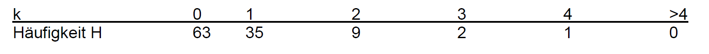
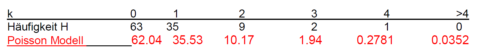

Die Poisson
Verteilung wird immer dort als stochastisches Modell benutzt, wenn es um die Wahrscheinlichkeit für das Eintreten einer bestimmten Anzahl gleichartiger Ereignisse geht, welche in einem gegebenen Zeitintervall (unabhängig voneinander) beliebig oft
auftreten können. Das sind beispielsweise die Anrufzahlen in einer Telefonzentrale, die Server Anfragen in einer Computer Zentrale, die Ausfälle von bestimmten Bauteilen (z.B. Sicherungen) oder die Meteoriteneinschläge in einer bestimmten zeitlichen
Periode.
Wir betrachten eine Telefonzentrale in einem Zeitintervall \([0,T] \). Die Zufallsvariable \(X \) gebe die Anzahl der in diesem Zeitintervall erfolgten Anrufe an. Wir wollen eine Verteilung für diese Zufallsvariable herleiten. Dazu machen wir die folgenden Annahmen:
Dann wählen wir eine natürliche Zahl
\(n>0 \)
und teilen das Zeitintervall in \(n \) gleichgrosse Teilintervalle der Länge \(T/n \). Die Zahl \(n \) sei so gross, dass
Da es durchschnittlich \(\lambda \) Anrufe im Zeitintervall gibt und die Anrufe gleichverteilt sind, können wir annehmen, dass in jedem Teilintervall ein Anruf mit der Wahrscheinlichkeit \( p = \lambda /n \) erfolgt. Wegen der Unabhängigkeit der Anrufe,
ist die Anrufzahl \(X \) binomialverteilt mit der Wahrscheinlichkeit für genau \(k\geq 0 \) Anrufe (Zähldichte, PDF)
\( P(X = k) = \left( \begin{array}{l} n\\ k \end{array} \right) \cdot {[\frac{\lambda }{n}]^k} \cdot {[1 - \frac{\lambda }{n}]^{n - k}} \).
Der Nachteil einer solchen Binomialverteilung ist, dass nicht mehr als \(n \) Anrufe im gegebenen Zeitintervall erfolgen können. Eine solche obere Schranke wollen wir nicht im Modell haben. Aus diesem Grund werden wir (bei konstantem \(k\geq 0 \)) in einem Grenzprozess den Parameter \(n \) immer grösser werden lassen, d.h. das gegebene Zeitfenster \([0,T] \) in immer kleinere Teilintervalle zerlegen. Die resultierende Grenzverteilung dieser Binomialverteilungen wird, unter den getroffenen Annahmen, beliebige Anrufzahlen im gegebenen Zeitintervall zulassen:
\( \left( \begin{array}{l} n\\ k \end{array} \right) \cdot {[\frac{\lambda }{n}]^k} \cdot {[1 - \frac{\lambda }{n}]^{n - k}} = \frac{{n! \cdot {\lambda ^k} \cdot {{[1 - \frac{\lambda }{n}]}^n}}}{{(n - k)! \cdot k! \cdot {n^k} \cdot {{[1 - \frac{\lambda
}{n}]}^k}}} = \underbrace {\frac{{n(n - 1)...(n - k + 1)}}{{n \cdot n \cdot ... \cdot n}}}_{ \to 1} \cdot \frac{1}{{\underbrace {{{[1 - \frac{\lambda }{n}]}^k}}_{ \to 1}}} \cdot \underbrace {{{[1 - \frac{\lambda }{n}]}^n} \cdot }_{ \to {e^{ - \lambda
}}}\frac{{{\lambda ^k}}}{{k!}} \)
\( P(X = k) = \left( \begin{array}{l} n\\ k \end{array} \right) \cdot {[\frac{\lambda }{n}]^k} \cdot {[1 - \frac{\lambda }{n}]^{n - k}} \stackrel{n\to \infty}{\longrightarrow} {e^{ - \lambda }} \cdot \frac{{{\lambda ^k}}}{{k!}} \)
Also setzen wir für die Wahrscheinlichkeit für genau \(k \) Anrufe im Zeitintervall \([0,T]\):
\( P(X = k) = {e^{ - \lambda }} \cdot \frac{{{\lambda ^k}}}{{k!}} \)
Dies ist die Zähldichte (PDF) der sogenannten Poisson Verteilung. Sie ist, wie oben dargestellt, als Grenzverteilung von Binomialverteilungen definiert.
Beispiel
Von 1820 bis 1929 sah die Statistik für die Zahl der Kriegsausbrüche \(k \) pro Jahr, wie folgt aus (Nature 155 1945)

Die Zahl der Kriege (pro Jahr) wollen wir als Zufallsvariable \(X \) ansehen und dessen Verteilung bestimmen. Dazu treffen wir die Annahmen, dass Kriege voneinander unabhängig ausbrechen und im Zeitraum eines Jahres gleichverteilt sind. Als durchschnittliche Anzahl Kriege pro Jahr nehmen wir das arithmetische Mittel der oben angegebenen Kriegszahlen über den Zeitraum von 110 Jahren:
\( \lambda = \frac{1}{{110}}(0 \cdot 63 + 1 \cdot 35 + 2 \cdot 9 + 3 \cdot 2 + 4 \cdot 1) = {\rm{ 0}}{\rm{.5727}} \)
Unter diesen Voraussetzungen ist \(X \) eine Poisson verteilte Zufallsvariable. Die Wahrscheinlichkeit für den Ausbruch von \( k \) Kriegen während eines Jahres wird mit folgender Zähldichte (PDF) berechnet:
\( P(X = k) = {e^{ - 0.5727}} \cdot \frac{{{{0.5727}^k}}}{{k!}} \).Die Übereinstimmung mit der Statistik ist bemerkenswert. Unten in der Tabelle sind die statistisch ermittelten absoluten Häufigkeiten zusammen mit den Werten der Zähldichte der Poisson Verteilung (multipliziert mit der Gesamtzahl der 110 betrachteten Jahre) zu sehen.
Der Matllab Befehl, um die rot markierten Tabellenwerte für 0 bis 4 zu erhalten, wäre poisspdf([0:4])*110. Im Diagramm unten ist der Vergleich der statistisch erhobenen Daten mit den prognostizierten Werten zu sehen.


Aufgabe 1
Eine Telefonvermittlung erhält während der Hauptbetriebszeit durchschnittlich 300 Anrufe stündlich. Sie kann maximal 10 Verbindungen pro Minute herstellen. Wie gross ist die Wahrscheinlichkeit, dass die Vermittlung während einer beliebigen gegebenen Minute in der Hauptbetriebszeit überlastet ist, d. h. mehr Anrufe erhält, als sie Verbindungen herstellen kann?
Aufgabe 2
Die Verteilung der Anzahl der Schiffsunglücke (mit Schiffen über eine gewisse Mindestgrösse), im Atlantik bzw. Pazifik soll jeweils durch eine Poisson verteilte Zufallsvariable modelliert werden. Im Atlantik ereigneten sich im Jahr 2010 28 Schiffsunglücke. Im Pazifik waren im Jahr 2010 (von 52 Wochen) genau 32 Wochen ohne Unglück (Zahlen sind frei erfunden!).
a) Wie gross ist die Wahrscheinlichkeit, dass es im Atlantik in einem halben Jahr nicht mehr als 15 Unglücke gibt.
b) Wie gross ist die Wahrscheinlichkeit, dass es im Pazifik während eines halben Jahres nicht mehr als 15 Unglücke gibt.
c) Wie gross ist die Wahrscheinlichkeit, dass im Atlantik mindestens 8 Wochen lang kein Unglück passiert.
d) Wie gross ist die Wahrscheinlichkeit, dass es im Pazifik von einer zur nächsten Katastrophe nicht mehr als 2 Wochen dauert.
e) Wie gross ist die Wahrscheinlichkeit, dass sich während 5 Wochen in beiden Ozeanen zusammen mehr als 10 Unglücke ereignen.
Aufgabe 3
Es ist bekannt, dass 0.01% einer Bevölkerungsgruppe jährlich durch einen gewissen Unfall getötet werden. Bei einer Versicherung sind 10000 Personen der genannten Bevölkerungsgruppe gegen diesen Unfall versichert. Betrachten Sie die Zufallsvariable \(X\) = Anzahl Versicherte, die in einem bestimmten Jahr durch diesen Unfall umkommen.
a) Welcher Wahrscheinlichkeitsverteilung folgt die Zufallsvariable \(X\)?
b) Welches sind die Werte der Parameter dieser Wahrscheinlichkeitsverteilung?
c)
Welche
Approximation eignet sich für diesen Fall?
d) Berechnen Sie die Wahrscheinlichkeit, dass in einem gegebenen Jahr mehr als zwei dieser Versicherten durch den genannten Unfall umkommen, exakt und mit Hilfe der Approximation.